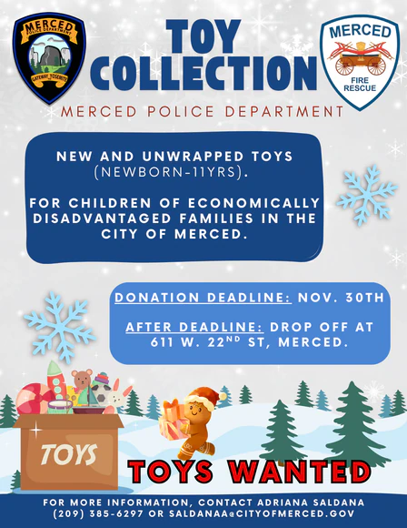

GameChangersAI (Hatzer Family) Toy Drive
Every Christmas, our family collects toys for kids in Merced County. If you know us as Team Charity Case, you’re in the right place.

How to give
Merced’s Cops & Fire for Kids
Our family collects toys for this program. The Merced Police Department and Merced Fire Rescue are asking for new, unwrapped toys for children from birth through age 11.
Their flyer lists November 30 for collection sites in Merced. After that date, you can take toys to 611 W. 22nd St. in Merced. Our family’s McSwain drop-off runs through December 11.

View the full-size flyer
It started with a blue bicycle
Will Hatzer was five on Christmas morning in 1986 when he came downstairs and saw his first bicycle. It was blue. Years later, his parents told him that strangers had given it to their family through the local firehouse.
Will cleaned up that same bike and donated it so another child could have it for Christmas. He started his toy drive at a firehouse in Columbus, Ohio, and kept it going after he moved to California. Over the years, friends, family, car clubs, and local businesses joined in.
Our family today
We also started GameChangers AI, our 501(c)(3) nonprofit, to help kids and adults learn to use AI.
Team Charity Case archive
Our old posts are still here, including toy pickups, raffle updates, and the video games our kids made.